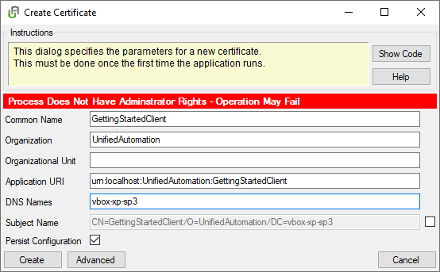
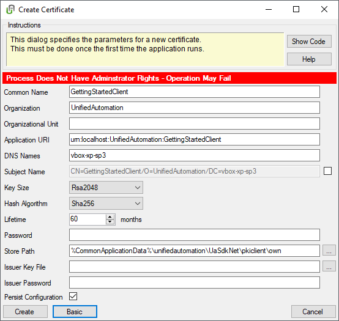

Description
The following screenshot shows an example dialog for creating a new certificate. Press the button “Show Code” to display the corresponding code, and the button “Help” to show this documentation page.

This dialog is used in the .NET based OPC UA Demo Server and the Getting Started Client Example included in the SDK. On first start-up, the application checks for a certificate. If no certificate exists, the dialog for creating a new certificate shows up.
The input fields are filled with default values which can be changed to the user’s liking. On clicking the “Advanced” button, additional input fields show up, which can be hidden again by pressing the “Basic” button.

Clicking on “Create” stores the certificate, by clicking “Cancel” the process can be aborted.
Sample Code
Step 1: Tell the SDK to Automatically Create Certificates
Setting the AutoCreateCertificate to true tells the SDK to create a certificate automatically at startup, if none could be loaded from the configured certificate store.
ApplicationInstance.Default.AutoCreateCertificate = true;
The CertificateNotFound is the event that is raised when the SDK detects that no certificate could be loaded from the store. This allows to notify the application, or allow the application to customize the creation of the certificate.
ApplicationInstance.Default.CertificateNotFound += new EventHandler<CreateCertificateEventArgs>(Application_CertificateNotFound);
Step 2: Implement the CertificateNotFound Callback
static private void Application_CertificateNotFound(object sender, CreateCertificateEventArgs e)
{
try
{
if (e.Silent)
{
return;
}
CreateCertificateDialog dialog = new CreateCertificateDialog();
ICertificate certificate = dialog.ShowDialog(null, new CreateCertificateDialogSettings()
{
Instructions = "The application does not have a certificate assigned.\r\nPlease specify the parameters for a new certificate."
});
if (certificate != null)
{
e.NewCertificate = certificate;
e.UpdateConfiguration = dialog.PersistConfiguration;
}
}
catch (Exception exception)
{
ExceptionDlg.ShowInnerException("", exception);
}
}
static private void Application_ConfigurationChanged(object sender, EventArgs e)
{
try
{
ApplicationInstance.Default.SaveConfiguration(false);
}
catch (Exception exception)
{
ExceptionDlg.ShowInnerException("", exception);
}
}
Step 3: CreateCertificateDialog
The CreateCertificateDialog displays the fields of the certificate and allows the user to change them. A certificate issued by a Certificate Authority (CA) can be created by specifying an issuer certificate. The certificate settings can be found here: CreateCertificateSettings.
The “Persist Configuration” check box is only evaluated if the dialog is opened by the CertificateNotFound EventHandler of ApplicationInstanceBase. If the check box is checked in this case, the configuration of the application gets updated with information about the new certificate.
public CreateCertificateDialog()
{
InitializeComponent();
Icon = GuiUtils.GetDefaultIcon();
this.CancelButton = this.CloseButton;
SecurityRightsLabel.Visible = !SecurityUtils.CheckIfProcessHasAdminRights();
foreach (object value in Enum.GetValues(typeof(KeySize)))
{
KeySizeComboBox.Items.Add(value);
}
KeySizeComboBox.SelectedIndex = 1;
foreach (object value in Enum.GetValues(typeof(HashAlgorithm)))
{
HashAlgorithmComboBox.Items.Add(value);
}
HashAlgorithmComboBox.SelectedIndex = 0;
PasswordTextBox.MouseEnter += PasswordTextBox_MouseEnter;
BasicButton_Click(this, null);
}
private void PasswordTextBox_MouseEnter(object sender, EventArgs e)
{
ToolTip tt = new ToolTip()
{
InitialDelay = 250,
ShowAlways = true
};
tt.SetToolTip(PasswordTextBox, "If you create a password that is secured by"
+ " a password, the certificate cannot be loaded by the SDK directly after"
+ " checking the configuration\nbecause there is no specified way to store "
+ " the password within the configuration.\n"
+ "You have to load the certificate directly in the code.");
}